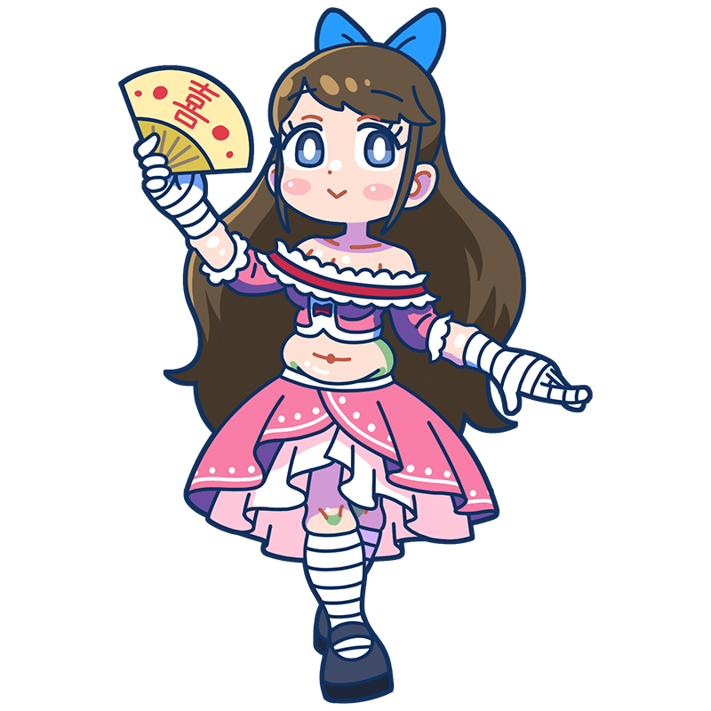

えへへっ！ 誰でもみんな、
幸せになりたいものでしょ？
ルノワール
光あふれる喜びを追求した
幸福と歓喜のミューズ
印象派の中でも特に有名なミューズのひとり。人懐っこく朗らかな性格で、癒やしを求めて彼女の元を訪れるミューズは多い。お菓子のガレットが大好きだが、最近はちょっぴり食べすぎを気にしているとか。
様式
印象派出身国
フランス王国
代表作
- 『ムーラン・ド・ラ・ギャレットの舞踏会』
- 『イレーヌ・カーン・ダンヴェール嬢』
- 『ピアノに寄る少女たち』など
ルノワールといえばこの一枚！
ムーラン・ド・ラ・ギャレット
の舞踏会
ルノワールの大作。ダンスホールで踊る人々を印象派らしい明るい色彩と軽やかな筆遣いで描いている。ごった返す人混みのうち何人かはルノワールの友人がモデルを務めたことがわかっている。タイトルにあるのはフランス・モンマルトルで営業していたダンスホールであり、おいしいガレットを売っていたらしい。
制作年
1876年
技法・材質
油彩、キャンバス
寸法
131 cm x 175 cm
所蔵
オルセー美術館
(フランス)
作品画像出典: https://publicdomainq.net/pierre-auguste-renoir-0019528/
ルノワールってどんな芸術家？
オーギュスト・ルノワール
印象派を代表する画家。柔らかな光と温かな色彩で描かれた人物画や風景画は多くの人々に愛され、「幸福の画家」と称されることもある。モネとは若い頃からの親友で、貧しい時代には互いを支え合う仲であった。晩年はリウマチによって筆を握ることすら困難になったが、それでも包帯で手に筆を固定して絵を描き続け、最後まで創作への情熱が途絶えることはなかった。
フルネーム
Pierre-Auguste Renoir
誕生
1841年2月25日
死没
1919年12月3日(78歳没)